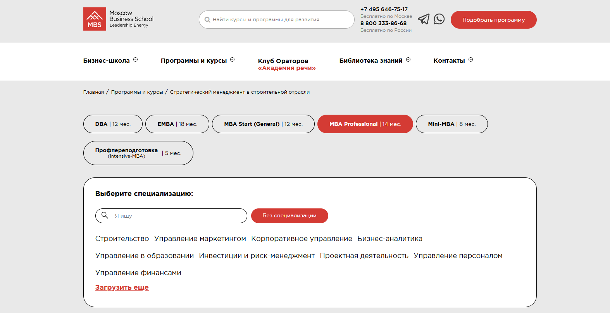
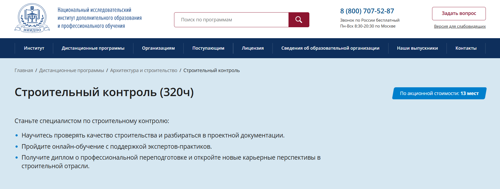

Обучение по управлению в сфере строительства для директоров по строительству — это программа профессиональной переподготовки, направленная на развитие управленческих и практических навыков, необходимых для эффективного руководства строительными проектами и объектами капитального строительства. Курсы повышения квалификации проходят в дистанционном формате, что удобно для руководителей строительных организаций, совмещающих учебный процесс с работой. Программы обучения включают изучение технологий строительства, строительного контроля, методов планирования и обеспечения качества. После успешного прохождения обучения слушателям выдается диплом государственного образца, подтверждающий их квалификацию. Мы составили рейтинг лучших дистанционных курсов и образовательных программ для директоров по строительству, которые помогут освоить актуальные знания, повысить профессиональные компетенции и успешно управлять процессом строительства на всех его этапах.
Информация обновлена:
ТОП онлайн-курсы обучения на Директора по строительству
- 🏆 Директор по строительству — Академия Eduson (по промокоду kursy скидка 🎁 5%)
- 🏆 MBA Эксперт: Управление предприятием — Академия Eduson (по промокоду kursy скидка 🎁 5%)
- 🏆 Руководитель строительной организации — Московская Бизнес Академия (по промокоду onlinekursy скидка 🎁 10%)
- Менеджмент в строительстве (MBA) — Московская Бизнес Академия (по промокоду onlinekursy скидка 🎁 10%)
- Директор по строительству — Русская Школа Управления
- MBA Эксперт: Строительство и девелопмент — Русская Школа Управления
- Mini MBA: Строительство — Русская Школа Управления
- Руководитель строительного проекта — Русская Школа Управления
- Управление строительными проектами — Русская Школа Управления
- Директор по строительству — Moscow Business School
- Стратегический менеджмент в строительной отрасли — Moscow Business School
- Практика эффективного управления строительными проектами — Moscow Business School
- Менеджмент в строительстве — МИПО (по промокоду onlinekursy действует скидка 🎁 10% )
- Управление в сфере строительства — МИПО (по промокоду onlinekursy действует скидка 🎁 10% )
- Менеджмент в строительстве — Институт профессионального образования (ИПО)
- Организация строительного производства. Управление строительными проектами — НИУ ВШЭ
- Управление строительством дома — Skillbox
- Строительный контроль (320 часов) — АНО «НИИДПО»
- Управление строительством — Учебный центр АПОК
- Управление строительством — Учебный центр «ЭКОДПО»
- Руководитель строительной организации — Учебный центр «НЦПО»
- Руководитель строительной организации — Учебный центр «АЙКЬЮ»
- Руководитель строительной организации — МАКПП
- Директор по строительству в девелопменте — Школа недвижимости «Движение»
Бесплатный курс по обучению на Директора по строительству
- Мини-курс «Профессия Директор по строительству», бесплатно — Eduson Academy
Отличительные преимущества каждой дистанционной программы обучения на директора по строительству
| № | Курс (школа) | Отличительные преимущества | |
|---|---|---|---|
| 🥇 | Директор по строительству — Академия Eduson | Дистанционный формат, гибкий график, бессрочный доступ, диплом проф. переподготовки | Перейти |
| 🥈 | MBA Эксперт: Управление предприятием — Академия Eduson | Высокий управленческий уровень: два диплома, актуальные бизнес-кейсы, формат MBA | Перейти |
| 🥉 | Руководитель строительной организации — Московская Бизнес Академия | Короткий срок (1 мес), удобный дистанционный формат, удостоверение гос. образца | Перейти |
| 4 | Менеджмент в строительстве (MBA) — Московская Бизнес Академия | Долгосрочная MBA-программа (18 мес) с профессиональной переподготовкой, поддержка трудоустройства | Перейти |
| 5 | Директор по строительству — Русская Школа Управления | Программа 5 мес (5 дней/мес), диплом гос. образца, доступ к материалам навсегда | Перейти |
| 6 | MBA Эксперт: Строительство и девелопмент — Русская Школа Управления | Премиум-MBA (12 мес, 600 часов), для топ-менеджеров строительной отрасли | Перейти |
| 7 | Mini MBA: Строительство — Русская Школа Управления | 8 мес, 250 часов, модульный формат, управленческие навыки для строительных организаций | Перейти |
| 8 | Руководитель строительного проекта — Русская Школа Управления | Курс 5 дней (40 ч), быстрое повышение квалификации, удостоверение гос. образца | Перейти |
| 9 | Управление строительными проектами — Русская Школа Управления | 3 дня (24 ч) дистанционно, практическая направленность, удостоверение | Перейти |
| 10 | Директор по строительству — Moscow Business School | Интенсив 4 дня, очно или онлайн, удостоверение или сертификат, высокая доля трудоустройства | Перейти |
| 11 | Стратегический менеджмент в строительной отрасли — Moscow Business School | MBA диплом + European Diploma Supplement, 14 мес, стратегический уровень | Перейти |
| 12 | Практика эффективного управления строительными проектами — Moscow Business School | Удостоверение о повышении квалификации или сертификат, 4 дня, очное и дистанционное обучение, карьерный рост — повышение в течение года после окончания обучения | Перейти |
| 13 | Менеджмент в строительстве — Московский институт профессионального образования (МИПО) | 1 год 6 мес, 2700 ч, MBA гос. образца, дистанционно | Перейти |
| 14 | Управление в сфере строительства — Московский институт профессионального образования | 7 мес, 690 ч, дистанционно, диплом проф. переподготовки | Перейти |
| 15 | Менеджмент в строительстве — Институт профессионального образования (ИПО) | До 7 мес, 600-1220 ч, дистанционно, диплом гос. образца | Перейти |
| 16 | Организация строительного производства. Управление строительными проектами — Институт комплексного проектирования НИУ ВШЭ | 68 ч, короткий онлайн-курс, удостоверение ПК НИУ ВШЭ | Перейти |
| 17 | Управление строительством дома — Skillbox | 2 мес, дистанционно, ориентирован на частное строительство, практические кейсы | Перейти |
| 18 | Строительный контроль (320 часов) — Национальный архитектурно-строительный институт (АНО «НИИДПО») | 3 мес, 320 ч, диплом проф. переподготовки, контроль качества строительства | Перейти |
| 19 | Управление строительством — Учебный центр АПОК | От 250 ч, от 1 мес, дистанционно, рассрочка без переплаты | Перейти |
| 20 | Управление строительством — Учебный центр дополнительного профессионального образования «ЭКОДПО» | От 250 ч, дистанционно, диплом проф. переподготовки, бесплатная доставка диплома | Перейти |
| 21 | Руководитель строительной организации — Учебный центр «НЦПО» | От 36-144 ч, дистанционно, ускоренный формат, удостоверение гос. образца | Перейти |
| 22 | Руководитель строительной организации — Учебный центр дополнительного профессионального образования «АЙКЬЮ» | 256 ч, дистанционно, бюджетная цена, диплом проф. переподготовки | Перейти |
| 23 | Руководитель строительной организации — Международная Академия Компетенций и Профессиональной Переподготовки | От 320-900 ч, дистанционно, индивидуальный график, диплом проф. переподготовки | Перейти |
| 24 | Директор по строительству в девелопменте — Школа недвижимости «Движение» | 104 ч, ориентирован на девелопмент, дистанционно, сертификат или удостоверение | Перейти |
1. 🏆 Директор по строительству – Академия Eduson
- ✅ Официальный сайт: eduson.academy
- 💸 Цена: от 126 000 ₽ со скидкой -60%.
- 💳 Рассрочка: от 10 500 ₽ в месяц беспроцентная на 12 месяцев, доступна оплата сразу со скидкой 5%.
- 📚 Формат: дистанционный формат обучения — видеолекции, онлайн-тренажёры, практические задания и бизнес-кейсы.
- ⏳ Продолжительность: определяется индивидуально, с гибким графиком обучения и бессрочным доступом к материалам.
- 📜 Документ: диплом о профессиональной переподготовке установленного образца, подтверждающий квалификацию в сфере строительства.
- 📝 Трудоустройство: специалисты востребованы в строительной сфере, девелопменте, промышленных и подрядных организациях.
- 🔷 Для кого подходит курс: инженерам, мастерам, руководителям строительных проектов и предпринимателям, планирующим повысить квалификацию и развить профессиональные навыки управления строительными процессами.
Особенности:
Программа реализуется в дистанционном формате с применением современных образовательных технологий и актуальных инструментов цифровизации строительства. Обучение проводится по гибкому графику, что удобно для руководителей строительных организаций и специалистов, совмещающих работу с прохождением программы. Курс включает изучение проектной документации, управления капитальными объектами и строительного контроля. После успешного прохождения обучения слушателям выдается диплом о профессиональной переподготовке. Формат обучения ориентирован на развитие практических навыков и освоение современных методов планирования и реализации строительных проектов. Образовательный процесс направлен на формирование компетенций, необходимых для эффективного управления этапами строительства и обеспечением качества объектов капитального строительства.
Чему учатся студенты:
- Планировать и контролировать этапы строительства по требованиям нормативных документов.
- Работать с проектной документацией и обеспечивать строительный контроль.
- Применять современные методы планирования и технологии строительства.
- Управлять строительными проектами и командой специалистов.
- Использовать BIM и ERP-системы в процессе обучения и при реализации проектов.
- Анализировать финансовые показатели и оптимизировать стоимость проектных решений.
Преподаватели:
- Эксперты-практики с опытом управления строительными организациями в России и за рубежом.
- Кураторы курса с профессиональным образованием в области капитального строительства и управления проектами.
Преимущества:
- Дистанционное образование доступно онлайн в любое удобное время.
- Формат обучения позволяет совмещать работу и повышение квалификации.
- Обучение проводится по государственным образовательным стандартам и профессиональным квалификациям.
- После успешного прохождения курсов слушателям выдаются дипломы установленного образца.
- В программе обучения используются современные технологии строительства и актуальные методы планирования.
- Курс помогает выйти на новый профессиональный уровень и освоить навыки управления строительными проектами.
- Слушателям предоставляются учебные материалы, шаблоны документов и практические кейсы.
- Возможность оформить налоговый вычет 13% от стоимости обучения.
Отзывы учеников:
Слушатели отмечают качественное обучение, удобный дистанционный формат и гибкий график обучения. Многие подчеркивают, что после прохождения программы и получения диплома смогли повысить квалификацию, перейти на руководящие должности и эффективно управлять строительными проектами. Студенты выделяют профессионализм преподавателей и практическую направленность образовательных программ Eduson Academy.
Перейти на официальный сайт курса2. 🏆 MBA Эксперт: Управление предприятием — Академия Eduson
- ✅ Официальный сайт: eduson.academy
- 💸 Цена обучения: от 224 796 ₽ со скидкой 60%.
- 💳 Рассрочка: от 18 733 ₽ в месяц беспроцентная рассрочка на 12 месяцев, первый платеж через месяц.
- 📚 Формат: дистанционный формат, 479 видеоуроков, 42+ бизнес-кейса, 51 тренажёр, домашние задания, тесты и консультации с экспертами.
- ⏳ Продолжительность: 10–12 месяцев, индивидуальный график обучения.
- 📜 Документ: диплом о профессиональной переподготовке государственного образца и диплом Академии Eduson, подтверждённый «Сколково».
- 📝 Трудоустройство: курс способствует повышению квалификации и карьерному росту, помогает руководителям развивать управленческие компетенции.
- 🔷 Для кого подходит курс: для собственников бизнеса, топ-менеджеров, руководителей строительных и промышленных предприятий, финансистов и специалистов, желающих повысить профессиональный уровень.
Особенности:
Программа ориентирована на развитие системного подхода к управлению компанией в условиях цифровой экономики. Обучение проходит в дистанционном формате, что позволяет слушателям совмещать профессиональную деятельность и получение образования. После успешного прохождения обучения участники получают два диплома, подтверждающих квалификацию управленца. В программе объединены теоретические основы и практические задания, разработанные преподавателями из ведущих университетов и компаний, включая Stanford, «Сколково», KPMG и «Сбер». Обучение проходит онлайн в любое удобное время, доступ к материалам бессрочный. Программа обновлена в 2025 году и включает современные методы планирования, бизнес-моделирования и управления проектами. Слушателям предоставляются шаблоны, чек-листы и доступ к интерактивным тренажёрам, что способствует эффективному освоению практических навыков.
Чему учатся студенты:
- Разрабатывать стратегии развития компании и управлять проектами
- Планировать бюджеты, анализировать финансовую отчётность и управлять денежными потоками
- Организовывать систему внутреннего контроля и оптимизировать бизнес-процессы
- Руководить командами, внедрять KPI и оценивать эффективность решений
- Использовать нейросети и современные ИИ-инструменты в управлении бизнесом
- Учитывать юридические и налоговые аспекты при ведении предприятия
Преподаватели:
- Ицхак Адизес — мировой эксперт по управлению, профессор Стэнфорда и Колумбии, 50+ лет опыта, методология используется Coca-Cola и Bank of America.
- Виталий Полехин — президент организации INVESTORO, член правления Европейской ассоциации бизнес-ангелов.
- Азиза Улугова — преподаватель НИУ ВШЭ, замдиректора крупного медиа-холдинга, 7+ лет в финансовом менеджменте.
- Кирилл Линник — консультант-практик, автор 15 методик в контроллинге, 160+ реализованных проектов.
- Виктор Бурмистров — вице-президент по финансам Maximum Education, 15+ лет опыта в финансах и инвестициях.
- Ирина Радюшкина — управляющий партнёр Gotomarket.Me, 12+ лет опыта в IT и международных компаниях.
- Доминик Хоулдер — эксперт по стратегическому менеджменту, автор публикаций в Harvard Business Review.
Преимущества:
- Дистанционный формат обучения — гибкий график без дедлайнов
- Бессрочный доступ к обновляемым учебным материалам
- Возможность вернуть 13% стоимости курса с налоговым вычетом
- Два диплома: государственного образца и от Академии Eduson
- Поддержка куратора в течение всего периода обучения
- Практическая направленность: реальные кейсы и тренажёры
- Преподаватели — практики из топовых компаний и университетов
- Современные образовательные технологии и акцент на бизнес-практике
Отзывы учеников:
Слушатели отмечают удобный дистанционный формат обучения, высокое качество преподавания и практическую ценность программы. По отзывам выпускников, курс помогает развить управленческие навыки, наладить систему планирования и улучшить финансовые показатели компаний. Особенно выделяют насыщенность учебных материалов, оперативную поддержку кураторов и профессионализм преподавателей. Многие студенты отмечают карьерный рост и повышение дохода после окончания курса.
Перейти на официальный сайт курса3. 🏆 Руководитель строительной организации — Московская Бизнес Академия
- ✅ Официальный сайт: moscow.mba
- 💸 Цена обучения: от 34 222 ₽ (скидка 45%).
- 💳 Рассрочка: от 2 851 ₽ в месяц, доступна на 12 месяцев без переплаты, первый платеж через месяц.
- 📚 Формат: дистанционный формат с видеолекциями, практическими заданиями, онлайн-тестами и обратной связью от преподавателей.
- ⏳ Продолжительность: 1 месяц.
- 📜 Документ: удостоверение о повышении квалификации и сертификат установленного образца, данные заносятся в ФРДО.
- 📝 Трудоустройство: 65% слушателей находят работу по специальности в течение 3 месяцев после окончания обучения.
- 🔷 Для кого подходит курс: для руководителей строительных организаций, инженеров, менеджеров строительной сферы и специалистов, желающих повысить квалификацию.
Особенности:
Обучение проходит в дистанционном формате, что позволяет совмещать процесс обучения с работой. Программа обучения разработана в соответствии с профессиональными стандартами и включает современные технологии строительства, методы планирования и строительный контроль. Слушателям предоставляются актуальные учебные материалы, доступные онлайн в любое удобное время. После успешного прохождения обучения слушателям выдается диплом государственного образца. Образовательный процесс организован с учетом графика обучения и требований законодательства в сфере строительства. Курс помогает освоить профессиональные навыки управления строительными проектами и документами обеспечения строительства. Все занятия проводят практикующие эксперты с опытом в капитальному строительству и разработке проектной документации.
Чему учатся студенты:
- Управлению строительными проектами и командой исполнителей
- Методам планирования и контроля качества объектов капитального строительства
- Разработке проектной документации и соблюдению нормативных требований
- Финансовому планированию и оценке стоимости проектных работ
- Организации процессов осуществления строительного контроля и безопасности объектов
- Эффективному взаимодействию с подрядчиками и заказчиками
Преподаватели:
- Владимир Брагин — предприниматель в сфере архитектуры и малоэтажного строительства, эксперт по жилищной политике, консультант по развитию ИЖС.
Преимущества:
- Обучение проводится с использованием современных образовательных технологий
- Курс доступен онлайн и подходит для любого графика обучения
- Слушателям предоставляются все учебные материалы в дистанционной форме
- Выдается удостоверение о повышении квалификации, заносимое в реестр документов ФРДО
- Возможность компенсировать до 100% стоимости обучения с помощью программы привилегий
- Доступна рассрочка без переплаты и возврат полной суммы в течение 14 дней
- Обратная связь от преподавателей и поддержка кураторов на всех этапах обучения
- Актуальная программа с обновлением 2025 года и аккредитациями ECICEL, РАБО, НАСДОБР, ELQN
Отзывы учеников:
Студенты Московской Бизнес Академии отмечают качественное обучение и доступный формат прохождения курсов. В отзывах часто подчеркивают удобство дистанционного образования, профессионализм преподавателей и практическую пользу знаний. Многие выпускники отмечают рост профессиональных компетенций и быстрые результаты трудоустройства после окончания курса.
Перейти на официальный сайт курса4. Менеджмент в строительстве (MBA) — Московская Бизнес Академия
- ✅ Официальный сайт: moscow.mba
- 💸 Цена обучения: от 390 500 ₽ (скидка до −45%).
- 💳 Рассрочка: от 10 847 ₽ в месяц до 36 месяцев без переплаты, первый платеж — через месяц.
- 📚 Формат: дистанционный формат обучения, включает видеолекции, практические задания, тесты, обратную связь от преподавателей и кураторов.
- ⏳ Продолжительность: 18 месяцев.
- 📜 Документ: диплом о профессиональной переподготовке государственного образца, заносится в ФРДО.
- 📝 Трудоустройство: поддержка в создании резюме, оформлении портфолио, подготовке к собеседованиям и поиске клиентов.
- 🔷 Для кого подходит курс: для руководителей строительных организаций, менеджеров проектов, специалистов строительной сферы, желающих повысить квалификацию и перейти на новый профессиональный уровень.
Особенности:
Программа сочетает теоретическую подготовку и практические кейсы, охватывающие управление строительными проектами, финансовое планирование и контроль качества объектов капитального строительства. Обучение проходит в дистанционном формате, что позволяет совмещать работу и учёбу без отрыва от производственного процесса. Доступ к материалам открыт онлайн — слушателям предоставляются видеолекции, практические задания и тесты для успешного прохождения программы. Преподаватели — практикующие эксперты ведущих строительных компаний. По завершении курса слушателям выдаются дипломы государственного образца, подтверждающие освоение профессиональных компетенций и соответствие современным стандартам управления проектами. Гибкий график обучения подходит как руководителям, так и специалистам, желающим пройти профессиональную переподготовку дистанционно. Программа обучения соответствует требованиям нормативных документов в области строительства и управления проектами.
Чему учатся студенты:
- Планированию и управлению строительными проектами на всех этапах — от разработки проектной документации до осуществления строительного контроля
- Бюджетированию, управлению рисками и анализу стоимости проектных решений
- Применению современных технологий строительства и цифровых инструментов управления
- Организации процессов повышения качества и обеспечения безопасности объектов капитального строительства
- Решению управленческих задач и эффективной коммуникации в командах проектов
Преподаватели:
- Анастасия Комарова — предприниматель и маркетолог, основатель агентства «CLEVERRA», автор 200+ публикаций о маркетинге.
- Ирина Германова — руководитель Института дополнительного профессионального образования работников социальной сферы (ИДПО).
- Валерия Трофимова — экономист ВТБ, дипломированный советник, аспирант Финансового университета при Правительстве РФ.
Преимущества:
- Дистанционный формат позволяет проходить обучение в любое удобное время
- Обучение проводится по аккредитованным образовательным программам с государственной лицензией №041221
- Слушателям предоставляются актуальные учебные материалы и поддержка кураторов
- Доступна рассрочка без переплаты и возможность возврата 13% через налоговый вычет
- После окончания обучения слушатель получает диплом государственного образца
- 62% выпускников программ MBA продвинулись по карьерной лестнице
- Программа включает модуль по искусственному интеллекту в подарок
- Применяются современные методы планирования и управления строительными процессами
Отзывы учеников:
Студенты Московской Бизнес Академии отмечают качественное обучение, доступные дистанционные курсы, гибкий график и практикоориентированный подход. В отзывах подчеркивают, что обучение проходит комфортно благодаря поддержке преподавателей и кураторов. Отдельно выделяют актуальность программы, удобство онлайн-формата и возможность совмещать обучение с работой. Многие выпускники отмечают улучшение профессиональных навыков и рост в карьере уже после окончания курсов.
Перейти на официальный сайт курса5. Директор по строительству — Русская Школа Управления
- ✅ Официальный сайт: uprav.ru
- 💸 Цена обучения: от 160 000 ₽ (действует акция).
- 💳 Рассрочка: от 14 933 ₽/мес до 12 месяцев без переплат.
- 📚 Формат: дистанционный формат обучения, включает онлайн-трансляции, видеокурсы, практические задания, шаблоны и тесты.
- ⏳ Продолжительность: 5 месяцев (по 5 дней в месяц).
- 📜 Документ: диплом о профессиональной переподготовке установленного государственного образца, вносится в ФРДО.
- 📝 Трудоустройство: выпускники расширяют профессиональную сферу и повышают квалификацию для руководящих позиций в строительных организациях.
- 🔷 Для кого подходит курс: для руководителей строительных компаний, специалистов девелопмента и менеджеров проектов, стремящихся повысить профессиональные навыки управления строительными проектами.
Особенности:
Обучение проводится в дистанционном формате с доступом к онлайн-платформе и возможностью выбора индивидуального графика обучения. Программа направлена на развитие управленческих компетенций в строительной сфере и освоение современных технологий строительства. Студенты изучают методы планирования, контроля качества и управления проектной документацией на различных этапах капитального строительства. По окончании обучения слушателям выдается диплом государственного образца, подтверждающий квалификацию в сфере управления строительными проектами. Доступ к материалам сохраняется бессрочно, что позволяет возвращаться к темам и обновленным лекциям. Образовательный процесс построен в соответствии с профессиональными стандартами и требованиями законодательства РФ.
Чему учатся студенты:
- Управлению строительными проектами и взаимодействию с подрядчиками
- Методам оптимизации процессов и контролю за сроками выполнения работ
- Разработке проектной документации и расчету стоимости строительных работ
- Применению современных технологий в капитальном строительстве
- Формированию эффективной команды проекта и коммуникациям внутри коллектива
Преподаватели:
- Мазуров Алексей Валерьевич — к.ю.н., эксперт в области земельного права и законодательства в строительстве
- Гришина Марина Викторовна — специалист по инвестиционно-строительным проектам, руководитель девелоперских компаний
- Работкин Дмитрий Васильевич — эксперт по ценообразованию и сметному нормированию в строительстве
- Мороховец Алексей Александрович — практик в управлении строительным производством и внедрении управленческого учета
Преимущества:
- Обучение в дистанционном формате без отрыва от работы
- Доступ к записям занятий и материалам курса без ограничения по времени
- Соответствие программы приказу Минобрнауки РФ №499м
- Разбор практических кейсов и примеров участников
- Индивидуальный график обучения и поддержка преподавателей
- Возможность выбора формата обучения: очно, онлайн-трансляция или видеокурс
- Признанный диплом, вносимый в Федеральный реестр документов об образовании
Отзывы учеников:
Слушатели отмечают качественное обучение и практическую направленность программы. Отзывы подчеркивают высокий уровень преподавателей, доступность материалов и реальную пользу для профессиональной деятельности. Многие выпускники отмечают повышение квалификации и карьерный рост после успешного прохождения программы.
Перейти на официальный сайт курса6. MBA Эксперт: Строительство и девелопмент — Русская Школа Управления
- ✅ Официальный сайт: uprav.ru
- 💸 Цена обучения: от 450 000 ₽ до 990 000 ₽ в зависимости от формата.
- 💳 Рассрочка: от 46 200 ₽/мес до 12 месяцев без переплаты.
- 📚 Формат: дистанционный формат обучения — онлайн-трансляции, видеокурсы, очные сессии, индивидуальные консультации и тесты.
- ⏳ Продолжительность: 12 месяцев (600 академических часов).
- 📜 Документ: диплом о профессиональной переподготовке государственного образца, внесённый в ФРДО.
- 📝 Трудоустройство: помогает руководителям строительных компаний укрепить профессиональную сферу и повысить квалификацию.
- 🔷 Для кого подходит курс: для собственников, директоров, руководителей строительных подразделений и специалистов строительной сферы, стремящихся развить управленческие навыки.
Особенности:
Программа направлена на развитие управленческих компетенций в сфере строительства и девелопмента. Обучение проходит в дистанционном формате с возможностью индивидуального графика обучения. Студенты осваивают методы планирования и управления строительными проектами, знакомятся с современными технологиями строительства и принципами устойчивого развития. Образовательный процесс построен по стандартам профессионального образования с применением актуальных образовательных технологий. После прохождения программы слушателям выдается диплом государственного образца, подтверждающий профессиональную переподготовку. Дистанционная форма обучения обеспечивает удобство для специалистов, совмещающих работу и учебу. Каждый участник получает доступ к базе знаний, шаблонам и чек-листам для практического применения.
Чему учатся студенты:
- Планировать и управлять строительными проектами на разных этапах их реализации.
- Оптимизировать процессы девелопмента и снижать затраты.
- Анализировать финансовую отчетность и контролировать бюджеты проектов.
- Работать с проектной и сметной документацией, применять нормы законодательства.
- Организовывать строительный контроль и обеспечивать качество объектов капитального строительства.
- Формировать команды и эффективно управлять персоналом на строительных площадках.
Преподаватели:
- Мазуров Алексей Валерьевич — к.ю.н., эксперт в области земельного права, представляет интересы строительных компаний в судах.
- Гришина Марина Викторовна — эксперт в инвестиционно-строительных проектах, опыт работы в девелоперских организациях.
- Работкин Дмитрий Васильевич — специалист по ценообразованию и сметному нормированию, практик в техническом надзоре.
- Мороховец Алексей Александрович — эксперт-практик по управлению строительным производством и себестоимостью.
Преимущества:
- 70% программы составляют практические задания и реальные кейсы из строительной отрасли.
- Дистанционное образование позволяет проходить обучение в удобном темпе.
- Преподаватели — действующие эксперты строительной и девелоперской сфер.
- После окончания курсов слушателям предоставляются электронные материалы и бессрочный доступ к обновлениям.
- Программа соответствует государственным образовательным стандартам.
- Слушатели получают диплом, внесенный в федеральный реестр документов об образовании.
- Возможность корпоративного обучения для сотрудников компании-участника.
- Поддержка студентов и консультации преподавателей на всех этапах обучения.
Отзывы учеников:
Слушатели отмечают качественное обучение, удобный дистанционный формат и профессиональный уровень преподавателей. Многие подчеркивают практическую направленность программы, понятные объяснения сложных тем и пользу для управленцев строительных организаций. Отзывы указывают, что обучение помогает повысить квалификацию и уверенно применять знания в реальных строительных проектах.
Перейти на официальный сайт курса7. Mini MBA: Строительство — Русская Школа Управления
- ✅ Официальный сайт: uprav.ru
- 💸 Цена обучения: от 175 000 ₽ до 350 000 ₽ (акция).
- 💳 Рассрочка: от 16 333 ₽/мес до 12 месяцев без переплат.
- 📚 Формат: дистанционный формат обучения: онлайн-трансляции, видеокурс, очные занятия, практические задания, консультации с преподавателями.
- ⏳ Продолжительность: 8 месяцев, 250 академических часов, 19 дней очного обучения по модульной системе.
- 📜 Документ: диплом о профессиональной переподготовке установленного государственного образца, внесённый в ФРДО.
- 📝 Трудоустройство: повышение квалификации, расширение профессиональных компетенций, улучшение карьерных перспектив в строительной сфере.
- 🔷 Для кого подходит курс: руководителям строительных компаний, инженерам, проектировщикам, менеджерам проектов и специалистам, планирующим профессиональную переподготовку.
Особенности:
Программа создана для управленцев строительных организаций, стремящихся повысить уровень профессиональных навыков и освоить современные методы планирования и управления проектами. Обучение проходит с использованием образовательных технологий нового поколения, что делает процесс прохождения программы максимально гибким. Каждый слушатель получает доступ к записям занятий и базе знаний с актуальными шаблонами и чек-листами. Курс сочетает теорию и практику, охватывает все этапы строительства — от земельно-градостроительных вопросов до строительного контроля и обеспечения качества. Дистанционное обучение подходит для специалистов, совмещающих работу и обучение. После успешного завершения курса слушателям выдается диплом государственного образца.
Чему учатся студенты:
- Организовывать и проводить тендеры с выбором подрядчиков на основе экономической целесообразности
- Рассчитывать стоимость проектных и изыскательских работ с применением нормативных документов
- Анализировать финансовые показатели строительных проектов и принимать управленческие решения
- Разрабатывать проектную документацию с учетом требований законодательства и технических стандартов
- Управлять строительным контролем и качеством на всех этапах строительства
- Эффективно планировать ресурсы и контролировать сроки реализации объектов капитального строительства
Преподаватели:
- Мазуров Алексей Валерьевич — кандидат юридических наук, эксперт по земельному праву, автор программ по правовым аспектам строительства.
- Гришина Марина Викторовна — эксперт в области инвестиционно-строительных проектов, имеет опыт руководства девелоперскими компаниями.
- Работкин Дмитрий Васильевич — специалист по ценообразованию и сметному нормированию, эксперт в сфере технического надзора.
- Мороховец Алексей Александрович — эксперт-практик в строительстве, консультант по управленческому учету и оптимизации себестоимости.
Преимущества:
- Дистанционная форма обучения с возможностью выбора графика
- Обучение проходит под руководством практикующих экспертов строительной отрасли
- Слушателям предоставляются электронные учебные материалы и записи занятий
- Диплом вносится в Федеральный реестр документов об образовании
- Программа соответствует профессиональным стандартам строительной сферы
- Индивидуальные консультации для команд из одной компании
- База знаний и дополнительные материалы доступны бессрочно
Отзывы учеников:
Слушатели отмечают практическую направленность программы, высокий уровень преподавателей и удобный дистанционный формат. По отзывам студентов, обучение помогает систематизировать знания, улучшить навыки управления строительными проектами и уверенно применять современные методы планирования. Особенно положительно оценивают гибкий график обучения и доступ к материалам после окончания курса.
Перейти на официальный сайт курса8. Руководитель строительного проекта — Русская Школа Управления
- ✅ Официальный сайт: uprav.ru
- 💸 Цена обучения: от 44 500 ₽ до 89 000 ₽ в зависимости от формата обучения.
- 💳 Рассрочка: предоставляется от 4 153 ₽/мес до 12 месяцев без переплаты.
- 📚 Формат: дистанционный формат с видеолекциями, онлайн-трансляциями, практическими заданиями, тестами и бессрочным доступом к материалам.
- ⏳ Продолжительность: 5 дней (40 академических часов).
- 📜 Документ: удостоверение о повышении квалификации государственного образца, сведения вносятся в ФРДО.
- 📝 Трудоустройство: повышение профессионального уровня и карьерных возможностей в строительной сфере.
- 🔷 Для кого подходит курс: руководителям строительных проектов, специалистам и менеджерам строительных организаций, а также компаниям, желающим повысить квалификацию сотрудников.
Особенности:
Программа ориентирована на руководителей и специалистов, которые хотят развить профессиональные компетенции в области управления строительными проектами и капитальному строительству. Обучение проводится в дистанционном формате, что позволяет совмещать учебу с работой. В курсе рассматриваются современные технологии строительства, методы планирования и контроля качества, а также способы оптимизации бюджета. После окончания обучения слушателям предоставляется доступ к видеозаписям занятий и обновляемым учебным материалам. Программа обучения соответствует требованиям нормативных документов и профессиональных стандартов. Обучение проходит под руководством экспертов с большим практическим опытом. Курс помогает системно освоить управление проектами на всех этапах строительства и улучшить результаты работы компании.
Чему учатся студенты:
- Управлять строительными проектами на всех стадиях жизненного цикла
- Планировать бюджет и контролировать финансовые ресурсы
- Оценивать и снижать риски в процессе строительства
- Организовывать эффективное взаимодействие с подрядчиками и заказчиками
- Понимать основы земельного и градостроительного законодательства
- Анализировать проектную документацию и технико-экономические показатели
- Использовать современные методы планирования и контроля качества работ
Преподаватели:
- Мазуров Алексей Валерьевич — кандидат юридических наук, эксперт по земельному праву, автор учебных программ.
- Гришина Марина Викторовна — эксперт в области инвестиционно-строительных проектов, опыт работы в девелоперских компаниях.
- Работкин Дмитрий Васильевич — специалист по ценообразованию и сметному нормированию в строительстве, эксперт в области технического надзора.
- Пластинин Дмитрий Владимирович — эксперт по управлению инвестиционно-строительными проектами и инновациям в строительстве.
Преимущества:
- Дистанционное обучение с доступом к материалам в любое удобное время
- Программа повышения квалификации соответствует приказу Минобрнауки РФ №499м
- Документ о повышении квалификации вносится в Федеральный реестр документов об образовании
- Бессрочный доступ к учебным материалам после завершения курса
- Практическая направленность и разбор реальных кейсов участников
- Возможность обучения корпоративных команд с учетом целей компании
- Высокие оценки слушателей: рейтинг курса — 4.8 из 5
Отзывы учеников:
Слушатели отмечают качественное обучение, профессионализм преподавателей и удобный дистанционный формат. Среди плюсов чаще всего выделяют практическую пользу программы, четкую структуру занятий, гибкий график обучения и возможность получить документ государственного образца без отрыва от работы.
Перейти на официальный сайт курса9. Управление строительными проектами — Русская Школа Управления
- ✅ Официальный сайт: uprav.ru
- 💸 Цена обучения: от 34 500 ₽ до 69 000 ₽ в зависимости от формата.
- 💳 Рассрочка: от 3 220 ₽/мес до 12 месяцев без переплат.
- 📚 Формат: дистанционные курсы, видеоуроки, онлайн-трансляции, практические задания, тесты и обратная связь от преподавателей.
- ⏳ Продолжительность: 24 академических часа (3 дня обучения с 09:00 до 16:00).
- 📜 Документ: удостоверение о повышении квалификации государственного образца, внесённое в ФРДО.
- 📝 Трудоустройство: способствует карьерному росту и продвижению в строительной сфере.
- 🔷 Для кого подходит курс: для руководителей строительных организаций, инженеров, менеджеров проектов и специалистов, желающих повысить квалификацию и улучшить профессиональные навыки управления.
Особенности:
Обучение проходит в дистанционном формате с возможностью участия в очных или онлайн-трансляциях. Программа обучения соответствует Приказу Минобрнауки РФ №499м и учитывает профессиональные стандарты строительной сферы. После окончания курса слушателям предоставляются бессрочные доступы к учебным материалам и видеозаписям занятий. Программа сочетает теоретические знания с практическими заданиями и разбором реальных кейсов. Слушателям выдается удостоверение государственного образца, подтверждающее прохождение обучения. Курс помогает освоить современные методы планирования, проектирования и контроля качества строительных объектов. Гибкий формат обучения позволяет совмещать профессиональную деятельность и процесс обучения без отрыва от работы.
Чему учатся студенты:
- Планировать и управлять строительными проектами на всех этапах их жизненного цикла
- Разрабатывать и анализировать проектную документацию
- Оценивать стоимость проектных и строительных работ
- Применять методы календарного планирования и строительного контроля
- Минимизировать риски и оптимизировать ресурсы при реализации объектов капитального строительства
- Эффективно взаимодействовать с участниками проекта и контролировать сроки выполнения задач
Преподаватели:
- Гришина Марина Викторовна — эксперт в инвестиционно-строительных проектах, опыт руководства девелоперскими компаниями.
- Пластинин Дмитрий Владимирович — специалист по управлению инвестиционно-строительными проектами и инновациям в инжиниринге.
- Мороховец Алексей Александрович — эксперт-практик в строительстве, постановке управленческого учёта и себестоимости на производстве.
Преимущества:
- Соответствие государственным образовательным стандартам и требованиям законодательства РФ
- 70% практики и 30% теории в образовательном процессе
- Дистанционная форма обучения с возможностью выбрать любое удобное время
- Слушателям выдается удостоверение о повышении квалификации государственного образца
- Бессрочный доступ к учебным материалам и записям занятий
- Реальные кейсы и примеры из профессиональной практики
- Возможность обучения для корпоративных клиентов и руководителей строительных компаний
Отзывы учеников:
Слушатели отмечают качественное обучение, понятную подачу материала и большое количество практических примеров. Многие подчеркивают, что дистанционное обучение удобно совмещать с работой, а преподаватели Русской Школы Управления помогают освоить новые технологии и повысить профессиональный уровень. По отзывам, курс способствует карьерному росту и уверенности при управлении строительными проектами.
Перейти на официальный сайт курса10. Директор по строительству — Moscow Business School
- ✅ Официальный сайт: mbschool.ru
- 💸 Цена: 65 900 ₽
- 💳 Рассрочка: предоставляется от 2 746 ₽/мес для физических и юридических лиц
- 📚 Формат: очное и дистанционное обучение, включает видеолекции, практические задания, тесты и итоговую аттестацию
- ⏳ Продолжительность: 4 дня, обучение проходит ежедневно с 10:00 до 17:30
- 📜 Документ: удостоверение о повышении квалификации или сертификат Moscow Business School
- 📝 Трудоустройство: 85% выпускников получают повышение после успешного прохождения обучения
- 🔷 Для кого подходит курс: для руководителей строительных организаций, инженеров и специалистов строительной сферы, стремящихся повысить квалификацию и уровень профессиональных компетенций
Особенности:
Обучение проводится в очном и дистанционном формате с использованием современных образовательных технологий. Программа включает изучение актуальных аспектов градостроительного регулирования, организации строительного контроля и управления строительными проектами. Слушателям предоставляются учебные материалы и доступ к онлайн платформе для прохождения программы. Формат обучения позволяет совмещать работу и процесс получения образования. После окончания курсов участники получают документы, подтверждающие профессиональный уровень и соответствие государственным образовательным стандартам. Обучение проходит под руководством опытных преподавателей-практиков с многолетним стажем в строительной отрасли. Дистанционный формат удобен для руководителей строительных подразделений, которые хотят развить навыки управления проектами и улучшить квалификацию. Программа помогает освоить практические методы планирования, контроля качества и эффективного управления строительными процессами.
Чему учатся студенты:
- Организации строительного контроля на всех этапах строительства
- Разработке и анализу проектной документации
- Использованию современных технологий строительства
- Пониманию законодательных требований и нормативных документов
- Планированию и управлению строительными проектами
- Оценке стоимости проектных и инженерных работ
- Контролю качества и безопасности объектов капитального строительства
Преподаватели:
- Слюсаренко Валерий Евгеньевич — доктор технических наук, специалист в проектировании и строительстве крупных объектов, участвовал в реализации федеральных программ
- Гришина Марина Викторовна — эксперт по управлению стоимостью инвестиционно-строительных проектов, консультант по рискам, бизнес-тренер
Преимущества:
- Дистанционный формат доступен онлайн из любой точки России
- Обучение проводится по государственным образовательным стандартам
- После окончания обучения слушателям выдаются удостоверения или сертификаты
- Программа соответствует требованиям законодательства РФ в строительной сфере
- Слушателям предоставляются все учебные материалы и доступ к платформе дистанционного образования
- Курс помогает освоить методы планирования и контроля строительных проектов
- Обучение проходит в короткие сроки с сохранением качества и практической направленности
Отзывы учеников:
Слушатели отмечают удобный дистанционный формат, качественное обучение и практическую пользу программы. Выпускники положительно оценивают профессионализм преподавателей и возможность применять полученные знания в управлении строительными проектами. Многие отмечают повышение квалификации и карьерный рост после окончания обучения.
Перейти на официальный сайт курса11. Стратегический менеджмент в строительной отрасли — Moscow Business School
- ✅ Официальный сайт: mbschool.ru
- 💸 Цена обучения: 329 000 ₽ (при оплате онлайн действует скидка 10%, итог — 296 100 ₽).
- 💳 Рассрочка: доступна на 24 месяца — 13 708 ₽ в месяц.
- 📚 Формат: дистанционный формат обучения: видеолекции, кейсы, практические задания, вебинары и Q&A-сессии.
- ⏳ Продолжительность: 14 месяцев.
- 📜 Документ: диплом «Мастер делового администрирования (MBA)» и Diploma Supplement европейского образца.
- 📝 Трудоустройство: выпускники успешно применяют знания для развития карьеры в строительной сфере и управления проектами.
- 🔷 Для кого подходит курс: для руководителей строительных компаний, девелоперов, менеджеров проектов и специалистов, желающих пройти профессиональную переподготовку и повысить квалификацию.
Особенности:
Программа сочетает дистанционное обучение и практическую работу с реальными кейсами строительных проектов. Обучение проходит в гибком графике, что позволяет совмещать учебу с профессиональной деятельностью. В курс входят современные методы планирования, управление рисками и технологиями строительства. Слушателям предоставляются доступы к электронным библиотекам и образовательным платформам. По окончании обучения слушателям выдается диплом государственного образца. Формат обучения разработан с учетом профессиональных стандартов и требований законодательства РФ. Программа помогает развить управленческие и профессиональные компетенции, необходимые для эффективного управления объектами капитального строительства.
Чему учатся студенты:
- Эффективному управлению строительными проектами и ресурсами
- Методам стратегического и операционного планирования
- Контролю качества и безопасности объектов капитального строительства
- Разработке проектной документации и оценке стоимости проектных работ
- Управлению рисками и командой проекта
- Использованию современных технологий строительства и нормативных документов
Преподаватели:
- Слюсаренко Валерий Евгеньевич — доктор технических наук, эксперт в проектировании и строительстве крупных объектов по федеральным программам.
- Соболева Елена Алексеевна — кандидат экономических наук, управляющий партнер ООО «ИРС-Девелопмент», преподаватель РАНХиГС и НИУ ВШЭ.
Преимущества:
- Обучение проходит в дистанционном формате без отрыва от работы
- Курс соответствует государственным образовательным стандартам
- Слушателям предоставляются все учебные материалы и доступ к онлайн-библиотеке
- Диплом MBA открывает новые карьерные возможности в строительной отрасли
- Постоянная поддержка кураторов и преподавателей
- Практическая направленность и применение знаний в реальных проектах
- Гибкий график обучения и возможность оплатить обучение в рассрочку
Отзывы учеников:
Студенты отмечают, что обучение помогает системно взглянуть на бизнес в строительстве, развить управленческие навыки и уверенность в принятии решений. Отдельно подчеркивают поддержку преподавателей и практическую ценность кейсов. Многие выпускники отмечают карьерный рост и повышение статуса после получения диплома.
Перейти на официальный сайт курса12. Практика эффективного управления строительными проектами — Moscow Business School
- ✅ Официальный сайт: mbschool.ru
- 💸 Цена обучения: 71 900 ₽ (при оплате онлайн — скидка 10%, итоговая стоимость 64 710 ₽).
- 💳 Рассрочка: доступна от 2 996 ₽/мес для физических и юридических лиц.
- 📚 Формат: очное и дистанционное обучение, видеолекции, практические задания, групповые кейсы, тестирование и консультации преподавателей.
- ⏳ Продолжительность: 4 дня, с 10:00 до 17:30.
- 📜 Документ: удостоверение о повышении квалификации или сертификат Moscow Business School.
- 📝 Трудоустройство: выпускники отмечают карьерный рост — 85% получают повышение в течение года после окончания обучения.
- 🔷 Для кого подходит курс: для руководителей строительных организаций, инженеров, технических заказчиков и специалистов строительной сферы, желающих развить профессиональные навыки управления проектами.
Особенности:
Программа направлена на освоение практических инструментов управления строительными проектами и организацию строительного контроля. Обучение проходит в дистанционном формате или очно, что удобно при плотном графике обучения. Курс помогает слушателям освоить методы планирования, оценку стоимости проектных работ и управление рисками на всех этапах строительства. Уделяется внимание современным технологиям строительства и требованиям нормативных документов. После успешного прохождения программы слушателям выдаются документы установленного образца. Программа соответствует государственным образовательным стандартам и помогает повысить квалификацию руководителям строительных подразделений.
Чему учатся студенты:
- Разрабатывать проектную документацию и управлять процессом строительства;
- Применять методы планирования и контроля сроков реализации проектов;
- Оценивать риски и управлять стоимостью проектных решений;
- Организовывать взаимодействие между заказчиком, подрядчиками и поставщиками;
- Использовать современные методы инженерного управления и бережливого производства;
- Обеспечивать качество и безопасность объектов капитального строительства.
Преподаватели:
- Гришина Марина Викторовна — бизнес-тренер, эксперт-практик в области оценки и управления стоимостью инвестиционно-строительных проектов, консультант по управлению рисками.
Преимущества:
- Курс соответствует профессиональным стандартам строительной отрасли;
- Форматы обучения — очное и дистанционное, доступные для слушателей из любых регионов;
- Преподаватели с практическим опытом более 5 лет в строительной сфере;
- Слушателям предоставляются учебные материалы и консультации экспертов;
- После прохождения курсов выдаются удостоверения государственного образца или сертификаты MBS;
- Гибкий график обучения подстраивается под профессиональную занятость слушателей;
- Возможность корпоративного обучения с адаптацией под цели компании.
Отзывы учеников:
Слушатели отмечают качественное обучение, практическую направленность и высокий уровень преподавателей. Часто подчеркивают структурированность программы, актуальность информации и возможность применить знания на практике уже после окончания курса. Преподаватель Гришина Марина Викторовна получает положительные отзывы за профессионализм и внимательное отношение к слушателям.
Перейти на официальный сайт курса13. Менеджмент в строительстве — Московский институт профессионального образования (МИПО)
- ✅ Официальный сайт: mipo.msk.ru
- 💸 Цена обучения: от 189 000 ₽ (действует скидка 30%).
- 💳 Рассрочка: предоставляется без процентов, возможно оплатить обучение частями.
- 📚 Формат: дистанционный формат, онлайн-вебинары, тесты, практические задания и поддержка персонального куратора.
- ⏳ Продолжительность: 1 год 6 месяцев, 2700 часов.
- 📜 Документ: диплом MBA государственного образца с регистрацией в ФИС-ФРДО.
- 📝 Трудоустройство: повышение квалификации и карьерный рост в строительных организациях, возможность перейти в руководящие должности.
- 🔷 Для кого подходит курс: руководителям строительных компаний, специалистам строительной сферы, менеджерам проектов и тем, кто хочет повысить профессиональный уровень.
Особенности:
Программа направлена на развитие управленческих и профессиональных навыков для эффективного руководства строительными проектами. Дистанционное обучение проходит в гибком графике, что позволяет совмещать профессиональную деятельность и прохождение программы. Используются современные образовательные технологии, позволяющие слушателям получать знания без отрыва от работы. Формат обучения включает анализ реальных кейсов, цифровое продвижение бренда и изучение нормативных документов. Обучение проводится с применением дистанционных курсов, сертифицированных по государственным образовательным стандартам. После окончания обучения слушателям выдается официальный диплом MBA с общеевропейским приложением, признанным в международных организациях. Программа помогает специалистам строительной сферы освоить современные методы планирования и контроля качества.
Чему учатся студенты:
- Проводить маркетинговый анализ рынка строительных услуг и продукции.
- Управлять строительными проектами, разрабатывать проектную документацию и контролировать процесс строительства.
- Оценивать стоимость проектных решений и осуществлять строительный контроль.
- Применять методы планирования и управления рисками на этапах капитального строительства.
- Разрабатывать стратегию digital-продвижения строительных компаний.
- Изучать нормативные документы и требования законодательства в сфере строительства.
Преподаватели:
- Дмитрий Коноплянский — советник групп «НЛМК» и «Роснефть», предприниматель, основатель сети ювелирных салонов.
- Сергей Ряковский — эксперт по стратегическому менеджменту, автор пособий по управлению персоналом.
- Траншье Янник — специалист в области инновационного менеджмента и технологического брокерства.
- Татьяна Баранова — эксперт по деловому этикету, основатель образовательного проекта «Про ЭТИКЕТ».
- Александр Борисов — эксперт по инвестиционному и финансовому анализу.
- Александр Додерер — руководитель агентства стратегических коммуникаций GRUPPE DREI.
Преимущества:
- Обучение проходит полностью в дистанционном формате с доступом к онлайн-платформе 24/7.
- После успешного прохождения обучения слушатель получает диплом государственного образца.
- Программа соответствует профессиональным стандартам и требованиям нормативных документов.
- Личный куратор сопровождает студента на всех этапах прохождения курсов.
- Преподаватели — практикующие эксперты с международным опытом.
- Возможность получить налоговый вычет 13% после оплаты обучения.
- Современные учебные материалы и реальные кейсы по проектированию и управлению строительством.
Отзывы учеников:
Выпускники отмечают удобный дистанционный формат обучения, поддержку кураторов и практическую направленность программы. Многие подчеркивают, что дистанционное образование помогло совмещать учебу с работой. По статистике института, 94% студентов повысили финансовые результаты, а 72% перешли в более престижные компании. Также отмечают высокое качество преподавания и современный формат обучения.
Перейти на официальный сайт курса14. Управление в сфере строительства — Московский институт профессионального образования
- ✅ Официальный сайт: mipo.msk.ru
- 💸 Цена: 50 500 ₽ (со скидкой 60%).
- 💳 Рассрочка: беспроцентная на 24 месяца, от 2 104 ₽ в месяц.
- 📚 Формат: дистанционный формат обучения с онлайн-вебинарами, практическими заданиями, кейсами и обратной связью от кураторов.
- ⏳ Продолжительность: 7 месяцев, 690 академических часов.
- 📜 Документ: диплом о профессиональной переподготовке государственного образца с внесением данных в ФИС-ФРДО.
- 📝 Трудоустройство: 72% выпускников трудоустраиваются в престижные строительные компании, 94% повышают доход.
- 🔷 Для кого подходит курс: для руководителей строительных организаций, начинающих специалистов и менеджеров смежных сфер, желающих развить профессиональные навыки и перейти в строительную сферу.
Особенности:
Обучение проходит полностью в дистанционном формате, что позволяет совмещать учебу с работой. Программа основана на современных образовательных технологиях и соответствует профессиональным стандартам строительной отрасли. Слушателям предоставляются видеолекции, тесты, доступ к учебным материалам и онлайн-чаты с преподавателями. Процесс обучения сопровождает куратор, обеспечивая поддержку и контроль качества. После успешного прохождения программы слушатель получает диплом, внесённый в федеральный реестр документов об образовании. Такой формат обучения подходит тем, кто ценит гибкий график и стремится повысить квалификацию в управлении строительными проектами и объектами капитального строительства.
Чему учатся студенты:
- Планировать расходы и график строительства
- Разрабатывать стратегию управления строительными проектами
- Понимать нормативные документы и стандарты качества
- Анализировать рынок строительных услуг
- Определять и снижать риски в строительстве
- Формировать положительный имидж строительной компании
Преподаватели:
- Смагина Виктория Игоревна — кандидат экономических наук, эксперт по управлению строительными процессами
- Ветрова Екатерина Александровна — кандидат экономических наук, специалист в сфере капитального строительства
- Морозов Сергей Александрович — практикующий директор строительной компании
- Моторин Дмитрий Викторович — эксперт по маркетингу и системам продаж в строительной сфере
- Кузнецова Татьяна Викторовна — бизнес-тренер по управлению проектами B2B и B2G
- Михновец Дарья Александровна — психолог, бизнес-тренер по командному управлению
Преимущества:
- Дистанционный формат обучения без отрыва от работы
- Актуальная программа, основанная на исследованиях строительного рынка
- Официальный диплом, внесённый в федеральный реестр
- Поддержка куратора на всех этапах обучения
- Практические задания и кейсы от экспертов отрасли
- Международное признание диплома и высокие карьерные перспективы
- Доступ к записям лекций и материалам на протяжении курса
Отзывы учеников:
Выпускники отмечают удобный дистанционный формат, внимательных кураторов и понятную подачу материала. Многие подчёркивают, что обучение помогает освоить практические навыки управления строительными проектами и способствует карьерному росту. Среди плюсов также называют возможность совмещать учёбу с работой и доступную стоимость курса с рассрочкой.
Перейти на официальный сайт курса15. Менеджмент в строительстве — Институт профессионального образования (ИПО)
- ✅ Официальный сайт: ipo.msk.ru
- 💸 Цена: полная стоимость 126 060 ₽, со скидкой 60% - 50 400 ₽.
- 💳 Рассрочка: от 2 100 ₽/мес - 12, 24 или 36 месяцев без переплаты.
- 📚 Формат: дистанционный формат обучения с видеолекциями, онлайн-тестами, домашними заданиями, вебинарами, поддержкой куратора и доступом к библиотеке ЮРАЙТ.
- ⏳ Продолжительность: до 7 месяцев, объем программы 600–1220 часов.
- 📜 Документ: диплом о профессиональной переподготовке установленного образца с внесением данных в ФИС-ФРДО.
- 📝 Трудоустройство: выпускники работают руководителями строительных проектов, мастерами и специалистами в организациях строительной сферы.
- 🔷 Для кого подходит курс: для специалистов с высшим или средним профессиональным образованием, планирующих развивать карьеру в управлении строительными объектами капитального строительства.
Особенности:
Программа профессиональной переподготовки создана для слушателей, которые выбирают дистанционное обучение без отрыва от работы. Такой формат обучения обеспечивает гибкий график и возможность индивидуального прохождения курсов. Слушателям предоставляются учебные материалы, нормативная документация, проектная база и доступ к онлайн-платформе. Курс помогает освоить методы планирования и управления строительными процессами, повысить уровень профессиональных компетенций и получить диплом государственного образца. Обучение проводится с применением современных образовательных технологий и ориентировано на применение знаний в строительной сфере. После успешного прохождения обучения студент получает диплом и может продолжить повышение квалификации по смежным направлениям.
Чему учатся студенты:
- Организации и управлению строительным производством;
- Разработке проектной документации и анализу стоимости проектных решений;
- Осуществлению строительного контроля и обеспечению качества объектов капитального строительства;
- Применению современных технологий строительства и методов планирования;
- Работе с нормативными документами и профессиональными стандартами;
- Эффективному управлению командой и ресурсами строительных площадок;
- Анализу и оценке экономической эффективности строительных проектов.
Преподаватели:
- Ульянкин Олег Валерьевич — кандидат экономических наук;
- Смагина Виктория Игоревна — кандидат экономических наук;
- Ветрова Екатерина Александровна — кандидат экономических наук;
- Морозов Сергей Александрович — директор строительной компании, практикующий специалист;
- Моторин Дмитрий Викторович — бизнес-тренер;
- Борисов Александр Николаевич — бизнес-консультант, эксперт по управлению;
- Кузнецова Татьяна Викторовна — бизнес-тренер;
- Михновец Дарья Александровна — психолог, бизнес-тренер;
- Шакаров Михаил Русланович — бизнес-тренер;
- Третьякова Оксана Владимировна — эксперт по HR-бренду Deloitte, основатель агентства «Образование в России».
Преимущества:
- Дистанционный формат обучения — гибкий график и личный кабинет слушателя;
- Обучение проходит под руководством опытных преподавателей-практиков;
- Все документы об окончании обучения выдаются установленного образца;
- Доступ к образовательной платформе и материалам курса предоставляется бессрочно;
- Поддержка кураторов и консультации по прохождению программы;
- Соответствие требованиям государственных образовательных стандартов;
- Экономия времени за счет дистанционного формата и удобной платформы;
- Возможность пройти обучение в рассрочку по выгодным условиям.
Отзывы учеников:
Слушатели отмечают качественное обучение, структурированную программу и понятную подачу материала. Отдельно выделяют удобный график обучения, помощь кураторов и возможность совмещать дистанционные курсы с основной работой. Выпускники подчеркивают практическую направленность программы и высокий уровень преподавателей. Многие указывают, что после прохождения обучения получили диплом и смогли перейти на руководящие должности в строительных организациях.
Перейти на официальный сайт курса16. Организация строительного производства. Управление строительными проектами — Институт комплексного проектирования НИУ ВШЭ

- ✅ Официальный сайт: hse.ru
- 💸 Цена обучения: 45 000 ₽
- 💳 Рассрочка: предоставляется индивидуально по запросу слушателя от 3 750 ₽/мес.
- 📚 Формат: дистанционный формат с синхронными онлайн-занятиями, лекциями, практическими заданиями и итоговым тестированием.
- ⏳ Продолжительность: 68 часов.
- 📜 Документ: удостоверение о повышении квалификации установленного НИУ ВШЭ образца.
- 📝 Трудоустройство: курс помогает повысить профессиональный уровень и улучшить управленческие навыки для карьерного роста в строительной сфере.
- 🔷 Для кого подходит курс: руководителям строительных проектов, начальникам участков, производителям работ и специалистам строительных организаций.
Особенности:
Программа реализуется в дистанционном формате обучения, что делает её доступной онлайн для слушателей из разных регионов. Обучение проходит под руководством опытных преподавателей и экспертов строительной сферы. Слушателям предоставляются электронные учебные материалы и удобный график обучения. Процесс обучения построен с использованием современных образовательных технологий и методов планирования строительных проектов. После успешного прохождения программы слушателям выдаются документы установленного образца, подтверждающие повышение квалификации. Образовательный процесс направлен на развитие практических и профессиональных навыков управления строительными проектами и контроля качества выполнения работ на объектах капитального строительства. Курс помогает адаптироваться к современным требованиям нормативных документов и профессиональных стандартов.
Чему учатся студенты:
- Разрабатывать проектную документацию (ПОС, ППР).
- Применять методы планирования строительного производства.
- Оценивать требования к обеспечению строительных проектов ресурсами.
- Организовывать строительный контроль и управлять строительными процессами.
- Использовать современные технологии и автоматизированные системы управления проектами.
- Понимать требования законодательства РФ и нормативных документов в области строительства.
Преподаватели:
- Саморядов Сергей Валерьевич — кандидат технических наук, доцент Московского архитектурно-строительного института.
- Сергеев Владимир Евгеньевич — старший преподаватель Российского транспортного университета (МИИТ).
- Воронов Павел Владимирович — кандидат технических наук, доцент Российского транспортного университета (МИИТ).
Преимущества:
- Современные дистанционные курсы с доступом онлайн из любого региона.
- Курс основан на профессиональных стандартах руководителей строительных организаций.
- Гибкий график обучения позволяет совмещать работу и обучение.
- По окончании курсов выдаются удостоверения о повышении квалификации.
- Программа обучения соответствует требованиям законодательства РФ и строительной отрасли.
- Практические задания помогают закрепить полученные знания и навыки управления проектами.
- Слушателям предоставляются все необходимые материалы и поддержка преподавателей.
Отзывы учеников:
По отзывам выпускников, обучение проходит в комфортной дистанционной форме, преподаватели подробно объясняют материал и помогают в процессе обучения. Отмечают, что программа дает актуальные знания по управлению строительными проектами и помогает в повышении профессиональной квалификации. После окончания обучения многие успешно применяют полученные навыки на практике в строительных компаниях.
Перейти на официальный сайт курса17. Управление строительством дома — Skillbox
- ✅ Официальный сайт: skillbox.ru
- 💸 Цена: 83 664 ₽ со скидкой 40%.
- 💳 Рассрочка: доступна на 12 месяцев без переплаты от 6 972 ₽/мес.
- 📚 Формат: дистанционный формат обучения — видеолекции, тесты, практические задания и живая обратная связь с преподавателями.
- ⏳ Продолжительность: 2 месяца.
- 📜 Документ: электронный сертификат о прохождении курса.
- 📝 Трудоустройство: консультативная помощь и поддержка для применения полученных профессиональных навыков в строительной сфере.
- 🔷 Для кого подходит курс: слушателям, планирующим строительство частного дома, руководителям строительных проектов и тем, кто хочет осуществлять строительный контроль собственных объектов.
Особенности:
Программа обучения создана совместно с ForumHouse и включает современные методы планирования, управления строительными проектами и контроля качества. Обучение проводится в дистанционном формате с использованием образовательных технологий Skillbox. После успешного прохождения программы обучения слушателям предоставляются учебные материалы и бессрочный доступ к видеоконтенту. Дистанционное образование дает возможность проходить курс в любое удобное время, сочетая обучение с основной работой. После окончания курса слушателям выдается электронный сертификат, подтверждающий уровень профессиональных компетенций. Программа обучения ориентирована на освоение практических навыков и развитие управленческих компетенций в сфере строительства. После окончания обучения участники осваивают этапы строительства и особенности осуществления строительного контроля объектов капитального строительства.
Чему учатся студенты:
- Анализировать проектную документацию и контролировать ее соответствие требованиям нормативных документов
- Понимать технологии строительства домов из газобетона, клееного бруса и каркасных конструкций
- Планировать график обучения и распределять ресурсы на этапе реализации проектов
- Осуществлять контроль за подрядчиками и качеством выполнения строительных работ
- Применять методы планирования и расчет стоимости проектных решений
- Оформлять необходимые документы и получать разрешения на строительство
Преподаватели:
- Георгий Снежкин — архитектор бюро «Хвоя»
- Дмитрий Супрун — специалист по каркасному домостроению
- Алексей Грищенко — генеральный директор компании «Финский домик»
- Михаил Литвин — специалист по строительству из газобетона, основатель Litwin House
- Ренат Баширов — директор по развитию GoodWood
- Валерий Новиков — юрист, специалист по жилищному праву, управляющий партнер «Юристат»
Преимущества:
- Дистанционное обучение доступно онлайн в удобных форматах
- Современные образовательные технологии и качественные учебные материалы
- Практические задания, основанные на реальных проектах строительства
- Живое взаимодействие с кураторами и экспертами строительной отрасли
- Пошаговая программа обучения по этапам капитального строительства
- После прохождения курсов слушателям выдаются электронные сертификаты
- Программа соответствует профессиональным стандартам строительной сферы
- Доступ к материалам сохраняется после завершения курса
Отзывы учеников:
Слушатели отмечают качественное обучение, гибкий график и доступность дистанционных курсов. По отзывам выпускников, обучение проходит в удобной форме с возможностью задавать вопросы кураторам и получать обратную связь. Многие подчеркивают, что после успешного прохождения обучения освоили навыки управления строительными проектами и научились контролировать процессы строительства. Курс помогает слушателям уверенно применять полученные знания в профессиональной деятельности и повышать квалификацию.
Перейти на официальный сайт курса18. Строительный контроль (320 часов) — Национальный архитектурно-строительный институт (АНО «НИИДПО»)
- ✅ Официальный сайт: niidpo.ru
- 💸 Цена: 48 185 ₽, по акции — 37 720 ₽ (скидка 21%).
- 💳 Рассрочка: 0% на 12 месяцев от 3145 ₽/мес, без первого взноса. Оплата через Яндекс Pay, юридическое лицо или частное лицо.
- 📚 Формат: дистанционный формат — онлайн обучение с видеолекциями, тестами, практическими кейсами и вебинарами. Используются современные образовательные технологии дистанционного образования.
- ⏳ Продолжительность: 13 недель (3 месяца).
- 📜 Документ: диплом о профессиональной переподготовке, действующий по всей России и признаваемый государственными и частными организациями.
- 📝 Трудоустройство: выпускники работают инженерами по строительному контролю, экспертами строительных проектов и специалистами по оценке качества объектов капитального строительства.
- 🔷 Для кого подходит курс: для руководителей строительных компаний, инженеров, архитекторов и специалистов строительной сферы, желающих пройти профессиональную переподготовку и повысить квалификацию.
Особенности:
Программа обучения разработана с учетом профессиональных стандартов и требований законодательства РФ. Обучение проводится в дистанционном формате с применением образовательных технологий, что делает процесс прохождения программы удобным для слушателей с любым графиком. Формат обучения полностью онлайн — все этапы строительства и контроля рассматриваются на примерах реальных объектов капитального строительства. Слушателям предоставляются учебные материалы, видеолекции, тесты и практические задания для закрепления профессиональных навыков. После успешного прохождения обучения слушателям выдается диплом государственного образца. Образовательный процесс включает вебинары, доступные онлайн в любое удобное время. Программа направлена на развитие практических компетенций и освоение современных методов контроля качества строительства.
Чему учатся студенты:
- Проверять проектную документацию и соответствие строительных работ нормативным требованиям.
- Оценивать качество и безопасность объектов капитального строительства.
- Применять методы неразрушающего контроля при обследовании конструкций.
- Контролировать процесс выполнения строительных работ на всех этапах.
- Анализировать результаты инженерных изысканий и оценивать документацию.
- Разрабатывать отчеты и акты строительного контроля.
Преподаватели:
- Эксперты-практики Национального архитектурно-строительного института — кандидаты наук, преподаватели с опытом в проектировании и строительном контроле.
Преимущества:
- Дистанционная форма обучения без необходимости очного присутствия.
- Гибкий график обучения с возможностью прохождения курсов в любое время.
- Бессрочный доступ к учебным материалам после окончания обучения.
- Соответствие профессиональным стандартам и требованиям нормативных документов.
- Поддержка кураторов и преподавателей на всех этапах прохождения программы.
- Выдается диплом о профессиональной переподготовке государственного образца.
- Рассрочка 0% и бонусы при оплате обучения единовременно.
Отзывы учеников:
Слушатели отмечают качественное обучение, понятную структуру дистанционных курсов и удобный формат обучения. Большинство студентов подчеркивают высокий уровень преподавателей, актуальность учебных материалов и практическую направленность. Выпускники отмечают, что после окончания курсов смогли повысить квалификацию и применить полученные знания в профессиональной сфере строительства.
Перейти на официальный сайт курса19. Управление строительством — Учебный центр АПОК
- ✅ Официальный сайт: apokdpo.ru
- 💸 Цена: от 29 980 ₽ (со скидкой -17%).
- 💳 Рассрочка: беспроцентная, до 12 месяцев, от 2 498 ₽ в месяц.
- 📚 Формат: дистанционный формат с видеолекциями, тестами, электронными материалами и итоговой аттестацией.
- ⏳ Продолжительность: от 250 до 1500 академических часов (от 1 месяца).
- 📜 Документ: диплом о профессиональной переподготовке с регистрацией в ФИС ФРДО.
- 📝 Трудоустройство: выпускники получают диплом, подтверждающий квалификацию, и продвигаются в профессиональной сфере.
- 🔷 Для кого подходит курс: для руководителей строительных организаций, инженеров и специалистов строительной сферы, желающих повысить профессиональные компетенции.
Особенности:
Программа ориентирована на руководителей строительных компаний и специалистов строительной сферы, которые хотят освоить новые профессиональные навыки и методы планирования проектов. Обучение проходит в дистанционном формате, что удобно для слушателей из любого региона. Курс построен на основе профессиональных стандартов и требований законодательства РФ. В процессе прохождения обучения студенты изучают современные технологии строительства, вопросы обеспечения качества и безопасности объектов капитального строительства. После успешного окончания обучения слушателям выдается диплом установленного образца, внесенный в государственный реестр документов. Благодаря дистанционным курсам можно гибко выбирать график обучения и совмещать учебу с работой.
Чему учатся студенты:
- Планированию и управлению строительными проектами;
- Разработке и анализу проектной документации;
- Проведению строительного контроля и надзора;
- Оценке стоимости проектных работ и инвестиционных рисков;
- Организации и управлению процессом строительства;
- Использованию нормативных документов в строительной сфере;
- Методам повышения качества строительных процессов.
Преподаватели:
- Селезнёва Мария Анатольевна — заместитель руководителя методического отдела, автор программы, эксперт в области управления строительными проектами.
Преимущества:
- Дистанционное обучение без привязки к месту и времени;
- Выдается диплом государственного образца, действующий по всей России;
- Регистрация информации об обучении в ФИС ФРДО;
- Возможность оплатить обучение в рассрочку без процентов;
- Гибкий график обучения и доступ к учебным материалам онлайн;
- Поддержка кураторов на всех этапах прохождения программы;
- Бесплатная доставка диплома по всей России.
Отзывы учеников:
Слушатели отмечают, что дистанционное обучение проходит комфортно и удобно. Многие ценят возможность совмещать работу с учебой и отмечают качественную подачу материалов. В отзывах часто упоминают компетентность преподавателей и быстрые сроки получения диплома. Выпускники подчеркивают, что программа помогает в повышении квалификации и карьерном росте.
Перейти на официальный сайт курса20. Управление строительством — Учебный центр дополнительного профессионального образования «ЭКОДПО»
- ✅ Официальный сайт: ecodpo.ru
- 💸 Цена: от 29 980 ₽ (скидка 40%).
- 💳 Рассрочка: 0% на 6 и 12 месяцев от 2 498 ₽/мес.
- 📚 Формат: дистанционный формат обучения — видеолекции, методические материалы, тесты, доступ к онлайн-библиотеке 24/7.
- ⏳ Продолжительность: от 250 часов, срок прохождения обучения — от 1,5 месяцев.
- 📜 Документ: диплом о профессиональной переподготовке государственного образца, внесенный в ФИС ФРДО.
- 📝 Трудоустройство: выпускники трудоустраиваются в строительные организации, архитектурные бюро и государственные учреждения.
- 🔷 Для кого подходит курс: для специалистов с высшим и средним профессиональным образованием, руководителей строительных проектов и сотрудников строительной сферы, желающих повысить квалификацию.
Особенности:
Обучение проводится в дистанционном формате с использованием современных образовательных технологий. Слушателям предоставляются учебные материалы, разработанные по действующим профессиональным стандартам. Формат обучения позволяет совмещать процесс прохождения программы с работой, а гибкий график обучения дает возможность изучать материал в любое удобное время. После успешного прохождения курсов слушатели получают диплом установленного образца, соответствующий требованиям законодательства РФ. Образовательный процесс сопровождается кураторами, которые помогают на всех этапах обучения. Доставка диплома осуществляется бесплатно по всей России, а данные заносятся в федеральный реестр документов об образовании.
Чему учатся студенты:
- Организации и управлению строительными проектами;
- Планированию и контролю этапов строительства;
- Работе с проектной документацией и нормативными документами;
- Применению современных технологий строительства;
- Проведению строительного контроля и оценке качества работ;
- Использованию методов планирования и управления рисками.
Преподаватели:
- Методисты центра «ЭКОДПО» — эксперты в области управления строительством и проектирования;
- Преподаватели с практическим опытом в строительных компаниях;
- Консультанты по нормативной и проектной документации, имеющие многолетний опыт обучения специалистов строительной сферы.
Преимущества:
- Полностью дистанционное обучение без отрыва от работы;
- Бесплатная доставка диплома по всей России;
- Соответствие требованиям ФЗ №273 и ФИС ФРДО;
- Возможность рассрочки без процентов на 6 и 12 месяцев;
- Гибкий график обучения и круглосуточный доступ к материалам;
- Курсы повышения квалификации с практическими заданиями;
- Поддержка кураторов на всем процессе обучения.
Отзывы учеников:
Слушатели отмечают удобный дистанционный формат и понятный процесс обучения. По отзывам, курсы помогают освоить современные методы управления строительными проектами и повысить профессиональные навыки. Многие выпускники подчеркивают, что получили диплом быстро и без сложностей, а также оценили поддержку преподавателей и гибкий график прохождения курсов.
Перейти на официальный сайт курса21. Руководитель строительной организации — Учебный центр «НЦПО»
- ✅ Официальный сайт: ncpo.ru
- 💸 Цена: от 3 900 ₽ (скидка 1 850 ₽ при оплате в день заказа).
- 💳 Рассрочка: 0% на 3, 6 или 12 месяцев от 325 ₽/мес.
- 📚 Формат: дистанционный формат обучения, видеолекции, тесты, методические материалы, личный кабинет и круглосуточный доступ.
- ⏳ Продолжительность: от 36 до 144 академических часов.
- 📜 Документ: удостоверение о повышении квалификации государственного образца, регистрация в ФИС ФРДО.
- 📝 Трудоустройство: документ принимается работодателями, подходит для допуска к руководящим должностям и повышения заработной платы.
- 🔷 Для кого подходит курс: для руководителей строительных организаций, инженеров, прорабов, специалистов строительной сферы, желающих повысить профессиональные навыки и управленческие компетенции.
Особенности:
Курс разработан для руководителей строительных организаций, стремящихся укрепить профессиональные навыки и получить официальное подтверждение квалификации. Обучение проходит полностью в дистанционном формате, что удобно для специалистов, совмещающих обучение с работой. Все слушатели получают доступ к материалам 24/7 и проходят обучение по гибкому графику. Программа охватывает современные технологии строительства, методы планирования и контроля строительных проектов. По окончании обучения выдается удостоверение государственного образца, внесенное в государственный реестр. Учебный центр «НЦПО» работает по лицензии Министерства образования и гарантирует полное соответствие программ профессиональным стандартам строительной сферы.
Чему учатся студенты:
- Организации и управлению строительными проектами;
- Планированию этапов строительства и разработке проектной документации;
- Контролю качества и строительному контролю объектов капитального строительства;
- Работе с нормативными документами и соблюдению технических требований;
- Оценке стоимости проектных решений и управлению бюджетами;
- Использованию современных образовательных технологий для эффективного обучения.
Преподаватели:
- Терешков Александр Леонидович — генеральный директор «НЦПО», специалист с опытом управления строительными проектами и организации дистанционных курсов.
- Грезнева Диана — преподаватель по строительным дисциплинам, эксперт в области профессиональной переподготовки руководителей строительной сферы.
- Малкова Анна — куратор программ дистанционного обучения, специалист по нормативной документации и образовательным технологиям.
Преимущества:
- Дистанционное обучение доступно онлайн в удобное время без отрыва от работы;
- Программа соответствует профессиональным стандартам и требованиям законодательства РФ;
- 100% гарантия внесения документов в государственный реестр ФРДО;
- Слушателям предоставляются методические материалы и практические задания;
- Ускоренный формат — выдача удостоверения за 1 день после окончания курса;
- Возможность оплатить обучение в рассрочку без процентов;
- Полный пакет документов и юридическая защита по официальному договору;
- Бесплатная доставка удостоверения по России.
Отзывы учеников:
По отзывам студентов, курс отличается качественным дистанционным форматом обучения и удобным графиком прохождения программы. Отмечают профессионализм преподавателей, доступность учебных материалов и реальную пользу для карьерного роста. Рейтинг центра: Яндекс — 5.0, Google — 4.9, 2ГИС — 5.0. Слушатели подчеркивают, что после прохождения обучения смогли повысить квалификацию, подтвердить профессиональные навыки и получить должности в сфере капитального строительства.
Перейти на официальный сайт курса22. Руководитель строительной организации — Учебный центр дополнительного профессионального образования «АЙКЬЮ»
- ✅ Официальный сайт: iq-dpo.ru
- 💸 Цена: 13 000 ₽ (дистанционный формат, акция).
- 💳 Рассрочка: предоставляется по запросу от 1 083 ₽/мес, предусмотрены скидки для коллективных заявок.
- 📚 Формат: дистанционное обучение с доступом к видеолекциям, практическим заданиям и тестам. Возможен очный формат обучения.
- ⏳ Продолжительность: 256 академических часов.
- 📜 Документ: диплом о профессиональной переподготовке, бессрочный, с внесением в ФИС ФРДО.
- 📝 Трудоустройство: выпускники получают возможность занимать руководящие должности в строительных организациях и участвовать в реализации объектов капитального строительства.
- 🔷 Для кого подходит курс: для специалистов строительной сферы, руководителей отделов, инженеров и тех, кто хочет пройти профессиональную переподготовку для управления строительными проектами.
Особенности:
Программа реализуется в дистанционном формате обучения с применением современных образовательных технологий. Слушателям предоставляются электронные учебные материалы, индивидуальный график обучения и постоянная поддержка преподавателей. Обучение проводится на основании нормативных документов и государственных стандартов, регулирующих деятельность в строительной сфере. После прохождения программы слушателям выдается диплом, подтверждающий квалификацию и право на осуществление строительного контроля. Образовательный процесс включает изучение методов планирования, технологий строительства и обеспечения качества проектной документации. Курс позволяет повысить профессиональные компетенции и освоить навыки управления строительными проектами.
Чему учатся студенты:
- Организации и управлению строительными процессами
- Разработке и ведению проектной документации
- Планированию этапов строительства и контролю сроков
- Обеспечению качества и безопасности объектов капитального строительства
- Управлению командой проекта и финансовыми ресурсами
- Применению современных технологий строительства и проектирования
Преподаватели:
- Опытные преподаватели строительной сферы, эксперты по капитальному строительству и проектированию.
- Практикующие руководители строительных организаций с многолетним опытом в управлении проектами.
- Кураторы дистанционных курсов, сопровождающие процесс обучения и аттестации слушателей.
Преимущества:
- Дистанционное обучение проходит в удобном для слушателя режиме
- Курс соответствует профессиональным стандартам строительной отрасли
- После окончания обучения выдается диплом государственного образца
- Обучение предоставляется с возможностью налогового вычета 13%
- Актуальные программы обучения, разработанные с учетом требований законодательства
- Образовательная лицензия и защита документов от подделок
- Курс способствует развитию практических навыков и управленческих компетенций
Отзывы учеников:
Слушатели отмечают понятный процесс обучения и доступные дистанционные курсы. Многие подчеркивают удобство онлайн-формата и качество предоставляемых материалов. Отмечают, что после окончания курсов получили диплом, повысили профессиональный уровень и смогли трудоустроиться в сфере капитального строительства. Высоко оценивают работу преподавателей и гибкий график обучения.
Перейти на официальный сайт курса23. Руководитель строительной организации — Международная Академия Компетенций и Профессиональной Переподготовки
- ✅ Официальный сайт: makpp.ru
- 💸 Цена: 21 000 ₽ (при полной оплате в течение 10 дней — 17 500 ₽).
- 💳 Рассрочка: 7 000 ₽ в месяц, доступна на весь срок обучения.
- 📚 Формат: дистанционный формат обучения — видеолекции, тесты, практические задания, итоговая аттестация.
- ⏳ Продолжительность: от 320 до 900 часов (в зависимости от выбранного формата обучения).
- 📜 Документ: диплом о профессиональной переподготовке по ФГОС.
- 📝 Трудоустройство: выпускники получают квалификацию, востребованную в строительной сфере, и могут претендовать на руководящие должности.
- 🔷 Для кого подходит курс: инженерам, архитекторам, руководителям строительных организаций и специалистам, желающим повысить квалификацию.
Особенности:
Обучение проводится в дистанционном формате, что удобно для слушателей из любого региона. Программа направлена на формирование профессиональных компетенций и развитие управленческих навыков для руководителей строительных организаций. В процессе обучения используются современные образовательные технологии, соответствующие федеральным стандартам. После успешного прохождения обучения слушателям выдаются дипломы государственного образца. Академия предоставляет электронные сертификаты и доступ к учебным материалам на весь срок прохождения программы. Слушателям предоставляются индивидуальные графики обучения, что позволяет совмещать работу и учебу. Курсы повышения квалификации проходят по утвержденным образовательным программам и охватывают все этапы строительства, проектирования и управления строительными проектами.
Чему учатся студенты:
- Управлению строительными проектами и строительным контролем
- Организации и оптимизации деятельности строительных организаций
- Правовым основам и требованиям нормативных документов в строительстве
- Подготовке проектной документации и экспертизе объектов капитального строительства
- Использованию современных технологий строительства и методов планирования
- Управлению персоналом и процессом прохождения обучения
- Применению принципов безопасности объектов капитального строительства
Преподаватели:
- Квалифицированные преподаватели Академии с практическим опытом управления строительными проектами.
- Эксперты строительной отрасли, специализирующиеся на современных технологиях строительства и проектной документации.
- Кураторы, сопровождающие слушателей на всех этапах обучения до получения диплома.
Преимущества:
- Дистанционное обучение доступно онлайн из любой точки России
- Соответствие программ профессиональным стандартам строительной сферы
- Индивидуальный график обучения и сопровождение преподавателями
- Возможность налогового вычета до 15 600 ₽
- Качественное обучение и поддержка на всех этапах прохождения курса
- Государственный диплом о профессиональной переподготовке
- Обучение проходит по актуальным образовательным программам
- Бесплатное вводное занятие до 31 октября
Отзывы учеников:
Слушатели отмечают удобный дистанционный формат и возможность проходить обучение в своем темпе. Положительно оценивают качество преподавания, практическую направленность и актуальность учебных материалов. Многие подчеркивают, что после окончания обучения получили повышение или начали работать в строительных организациях в должности руководителя.
Перейти на официальный сайт курса24. Директор по строительству в девелопменте — Школа недвижимости «Движение»

- ✅ Официальный сайт: dvizhenie.school
- 💸 Цена: от 89 000 ₽
- 💳 Рассрочка: до 12 месяцев, от 7 413 ₽ в месяц
- 📚 Формат: видеоуроки, тесты, домашние задания, кейсы и практические задания от экспертов отрасли
- ⏳ Продолжительность: 104 академических часа
- 📜 Документ: удостоверение о повышении квалификации или сертификат об окончании обучения
- 📝 Трудоустройство: выпускники получают востребованные профессиональные навыки и могут занимать руководящие должности в строительных компаниях
- 🔷 Для кого подходит курс: для руководителей строительных проектов, инженеров-строителей, начальников участков и специалистов строительной сферы, желающих пройти профессиональную переподготовку
Особенности:
Программа создана в дистанционном формате и сочетает теоретические знания с практическими заданиями. Процесс обучения проходит онлайн, что позволяет совмещать его с основным графиком работы. Формат обучения основан на современных образовательных технологиях, обеспечивающих качественное обучение и контроль результатов. Студенты изучают методы планирования, строительный контроль и управление объектами капитального строительства. После успешного прохождения программы слушателям выдается документ установленного образца, подтверждающий повышение квалификации. Обучение проводится опытными преподавателями и практикующими руководителями строительных проектов, что гарантирует высокий уровень подготовки.
Чему учатся студенты:
- Планированию и контролю строительных процессов
- Разработке проектной документации и оценке стоимости проектных работ
- Управлению строительными объектами и персоналом
- Методам обеспечения качества и безопасности объектов капитального строительства
- Финансовому менеджменту и управлению рисками в строительстве
- Использованию современных технологий строительства и инновационных решений
Преподаватели:
- Роман Демчук — эксперт в области управления строительством, консультант девелоперских проектов
- Игорь Сливкин — специалист по строительному контролю и нормативным документам
- Дарья Данилова — руководитель проектных команд, практикующий инженер-строитель
- Захар Воронин — эксперт по финансовому планированию и управлению проектами
- Екатерина Киреева — специалист по инновациям и технологиям строительства
- Мария Евстафьева — консультант в области строительного менеджмента
- Эмиль Саркисов — эксперт по управлению персоналом в строительных организациях
Преимущества:
- Дистанционное обучение проходит в удобное для слушателей время
- Доступ к учебным материалам онлайн 24/7
- Практические кейсы от экспертов отрасли
- Выдается диплом государственного образца
- Поддержка преподавателей и проверка домашних заданий
- Программа включает современные методы планирования и контроля качества
- Подходит для повышения квалификации специалистов строительной сферы
- Образовательная лицензия и официальное признание документов
Отзывы учеников:
Выпускники отмечают удобный дистанционный формат, доступность материала и практическую направленность обучения. Многие подчеркивают, что после окончания курсов смогли повысить квалификацию и перейти на руководящие должности в строительных организациях. Также выделяют поддержку преподавателей и качественную организацию образовательного процесса.
Перейти на официальный сайт курсаБесплатный курс по обучению на Директора по строительству
Мини-курс «Профессия Директор по строительству», бесплатно – Eduson Academy
✅ Официальный сайт: free.eduson.academyОписание и особенности:
- Бесплатный трехдневный мини-курс помогает сделать первые шаги в строительной сфере и понять, подходит ли профессия руководителям строительных проектов.
- Формат обучения — дистанционный, с гибким графиком и доступом онлайн в любое удобное время.
- Программа включает структурированные лекции, практические задания и тренажеры для развития профессиональных навыков управления строительным процессом.
- Обучение проводится с использованием современных образовательных технологий и интерактивных платформ.
- Слушателям предоставляются реальные бизнес-кейсы по проектированию и контролю объектов капитального строительства.
- После успешного прохождения курса участники смогут оценить свои компетенции и выбрать программу профессиональной переподготовки или повышения квалификации.
- Обучение проходит под руководством преподавателей-практиков с опытом в инвестиционном анализе и управлении строительными проектами.
- Курс подходит специалистам любого уровня — от начинающих инженеров до руководителей строительных организаций.
- После окончания обучения слушателям выдаются электронные сертификаты о прохождении программы.
Кто такой директор по строительству?
Директор по строительству — это высококвалифицированный руководитель, отвечающий за организацию, планирование и контроль всех этапов строительных проектов. Он управляет подрядчиками, инженерами, архитекторами, а также следит за соблюдением сроков, бюджета и качества выполняемых работ. Это ключевая фигура в любой строительной компании, от решений которой зависит успех объекта.
Что делает директор по строительству и чем он занимается?
Основная задача директора по строительству — координация всех процессов, связанных с возведением зданий и сооружений. Он отвечает не только за технические аспекты, но и за экономическую эффективность проекта.
- Разработка и утверждение графиков строительства;
- Контроль за соблюдением строительных норм, стандартов и техники безопасности;
- Ведение переговоров с подрядчиками и поставщиками;
- Проверка проектной и сметной документации;
- Оценка рисков и принятие решений для их минимизации;
- Организация работы строительных площадок и контроль выполнения задач;
- Отчетность перед инвесторами и руководством компании.
Что должен знать и уметь директор по строительству?
Для эффективной работы на этой должности специалист должен обладать как глубокими техническими знаниями, так и управленческими навыками. В 2025 году рынок требует от таких специалистов не только опыта, но и гибкости, умения работать с современными цифровыми инструментами.
- Знание строительных технологий и нормативов (СНиП, ГОСТ, ТР);
- Понимание принципов проектирования и инженерных систем;
- Навыки управления персоналом и мотивации команды;
- Опыт в финансовом планировании и управлении бюджетом;
- Умение работать с программами: AutoCAD, Revit, MS Project, BIM-системами;
- Знание законодательства в области строительства и охраны труда;
- Навыки стратегического планирования и кризисного управления.
Востребованность и зарплаты руководителей по строительству в России
Профессия директора по строительству в России в 2025 году остается одной из самых востребованных на рынке недвижимости и инфраструктурных проектов. Развитие национальных программ по строительству дорог, жилья и промышленных объектов создает высокий спрос на опытных управленцев.
- Средняя зарплата по России — от 250 000 до 400 000 рублей в месяц;
- В Москве и Санкт-Петербурге — до 600 000 рублей в месяц;
- В регионах — от 180 000 рублей в месяц в зависимости от объема проектов;
- Высококвалифицированные специалисты в нефтегазовом и промышленном строительстве могут получать свыше 1 миллиона рублей ежемесячно.
Кроме того, многие специалисты дополнительно получают бонусы за успешное завершение проектов, премии и долевое участие в прибыли компании.
Как стать директором по строительству и где учиться?
Путь к должности директора по строительству начинается с профильного образования и практического опыта. Обычно такие специалисты вырастают из инженеров, прорабов или начальников участков.
- Получите высшее образование по направлению «Промышленное и гражданское строительство», «Инженер-строитель» или «Архитектура»;
- Пройдите дополнительное обучение по менеджменту, экономике или проектному управлению (MBA, PM, BIM-управление);
- Накопите опыт работы на строительных объектах — от 5 до 10 лет;
- Развивайте лидерские качества, умение принимать решения и управлять большими коллективами;
- Используйте современные технологии (BIM, ERP-системы) — это конкурентное преимущество в 2025 году.
Карьерный рост и перспективы в сфере управления в строительстве
Директор по строительству может развиваться в нескольких направлениях:
- Генеральный директор строительной компании;
- Управляющий девелоперского холдинга;
- Консультант по стратегическому управлению строительными проектами;
- Руководитель государственных и инфраструктурных программ;
- Собственник строительного бизнеса.
Что включает в себя обучение на директора по строительству?
Обучение на директора по строительству включает изучение технологий строительства, управления строительными проектами, нормативных документов, контроля качества и капитальному строительству. Программа обучения направлена на формирование профессиональных компетенций, необходимых для управления строительными объектами и организации эффективной работы команды проекта.
Кому подойдет программа профессиональной переподготовки «Директор по строительству»?
Данная программа профессиональной переподготовки подойдет руководителям строительных организаций, инженерам, менеджерам строительных проектов и специалистам, желающим повысить профессиональный уровень и перейти в руководящую должность в строительной сфере.
Как проходит дистанционное обучение на руководителя по строительству?
Дистанционное обучение проходит в удобном онлайн формате. Слушателям предоставляются учебные материалы, видеолекции, тестовые задания и практические кейсы. Обучение проводится на современных образовательных платформах с поддержкой преподавателей-практиков.
Какие документы выдаются после окончания обучения?
После окончания обучения слушателям выдается диплом государственного образца о профессиональной переподготовке, подтверждающий квалификацию «Директор по строительству». Также возможно получение электронного сертификата для включения в реестр документов.
Можно ли пройти обучение дистанционно без отрыва от работы?
Да, обучение проходит в дистанционном формате, что позволяет учиться в любое удобное время без отрыва от основной деятельности. График обучения можно скорректировать под индивидуальный план, что делает программу удобной для занятых специалистов.
Какие навыки получает слушатель после прохождения программы по управлению в строительстве?
После прохождения программы обучения слушатель получает навыки управления строительными проектами, контроля качества, планирования сроков, разработки проектной документации и обеспечения безопасности объектов капитального строительства.
Сколько длится обучение на директора по строительству?
Продолжительность курса зависит от выбранной программы обучения и может составлять от 3 до 6 месяцев. Процесс обучения делится на теоретические и практические модули, которые завершаются итоговой аттестацией.
Какая стоимость обучения на директора по строительству?
Стоимость обучения зависит от выбранного формата обучения, продолжительности курса и дополнительных сервисов. Большинство центров предлагают гибкие условия оплаты и рассрочку. Также часто действуют скидки для корпоративных клиентов.
Какие темы изучаются на курсе по управлению в сфере строительства?
Программа включает изучение проектной документации, методов планирования, управления строительными рисками, контроля качества, нормативных требований и организационно-технологических процессов при осуществлении строительства.
Выдается ли диплом государственного образца?
Да, после успешного прохождения обучения выдается диплом государственного образца, который подтверждает квалификацию и позволяет официально занимать должность директора по строительству в строительных организациях.
Какие преимущества дистанционного образования?
Дистанционное образование позволяет осваивать современные технологии строительства, управленческие навыки и методы планирования без посещения очных занятий. Образовательный процесс проходит онлайн, что делает обучение доступным и удобным из любой точки страны.
Можно ли пройти курсы повышения квалификации на директора по строительству отдельно?
Да, можно выбрать курсы повышения квалификации по отдельным направлениям: строительный контроль, управление проектами, оценка стоимости проектных работ и другие модули, направленные на развитие профессиональных компетенций.
Кто преподает на курсах по строительству?
Занятия проводят опытные преподаватели и эксперты строительной отрасли с практическим опытом управления строительными проектами и реализацией объектов капитального строительства. Кураторы помогают слушателям на всех этапах обучения.
Как происходит процесс обучения?
Процесс обучения построен по модульной системе: теория, практические задания, проектная работа и итоговый экзамен. Слушателям предоставляются учебные материалы, шаблоны документов, нормативные базы и доступы к электронным ресурсам.
Какие требования предъявляются к слушателям программы по управлению в сфере строительства?
Для прохождения обучения требуется высшее или среднее профессиональное образование в области строительства или смежных специальностей. Профессиональный опыт в строительной сфере будет преимуществом, но не является обязательным.
Можно ли оплатить обучение в рассрочку?
Да, большинство образовательных центров предоставляют возможность оплатить обучение в рассрочку или частями. Обучение предоставляется по договору, что гарантирует прозрачность условий и сохранность ваших прав как слушателя.
Какие перспективы открывает диплом директора по строительству?
После получения диплома государственного образца выпускники могут занимать должности директора по строительству, главного инженера, руководителя проектов или менеджера строительных программ. Это открывает путь к профессиональному росту и высокому уровню заработной платы.
Какие современные технологии используются в обучении?
При дистанционном обучении применяются современные образовательные технологии: интерактивные платформы, вебинары, симуляторы проектного планирования, электронные учебные материалы и система дистанционного тестирования.
Можно ли пройти обучение повторно для обновления знаний?
Да, многие образовательные центры предлагают программы повышения квалификации и обновления знаний для специалистов, уже имеющих диплом о профессиональной переподготовке. Это позволяет оставаться в курсе новых технологий строительства и изменений в нормативной базе.
Что дает успешное прохождение программы обучения на директора по строительству?
Успешное прохождение программы обучения дает возможность освоить современные методы управления строительными проектами, повысить профессиональную квалификацию и получить документ, подтверждающий компетенции в соответствии с профессиональными стандартами.
------------------------------------------------
Реклама. Информация о рекламодателе по ссылкам в статье.